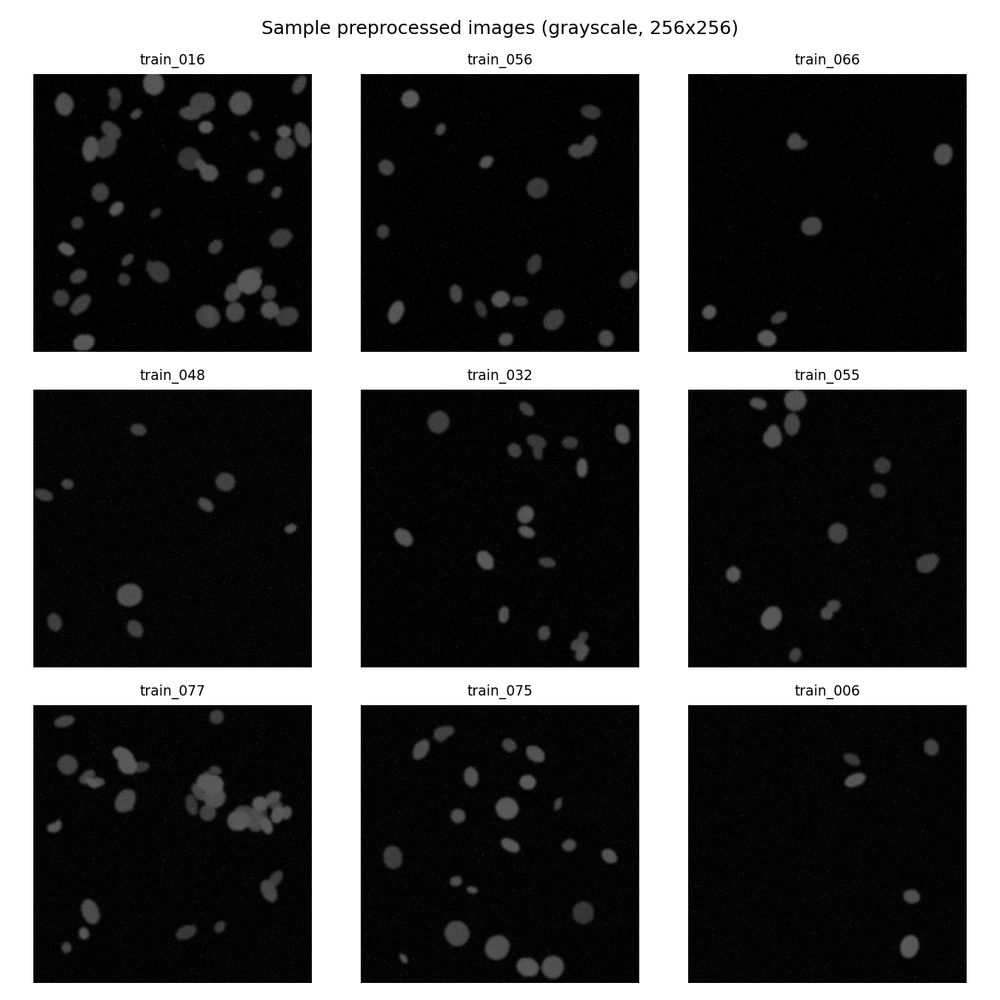
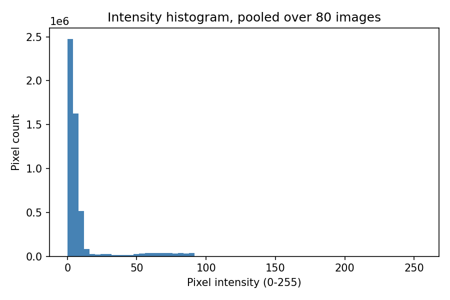
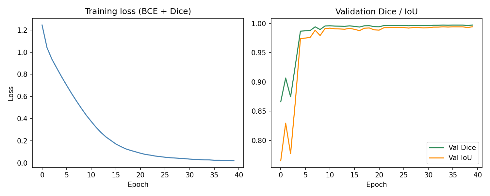
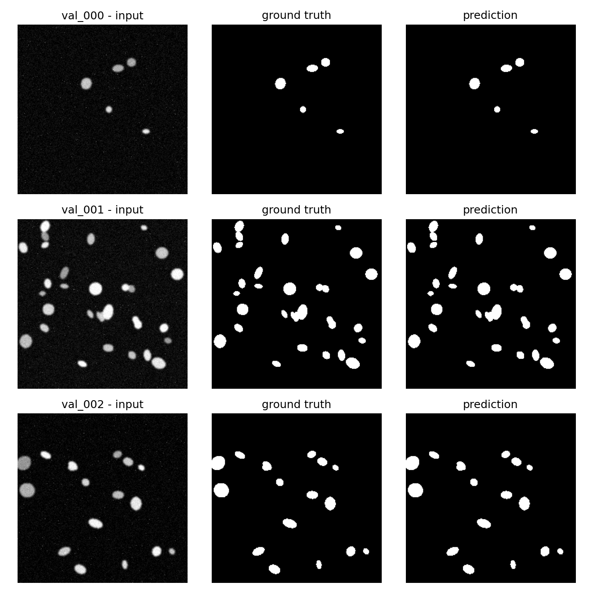
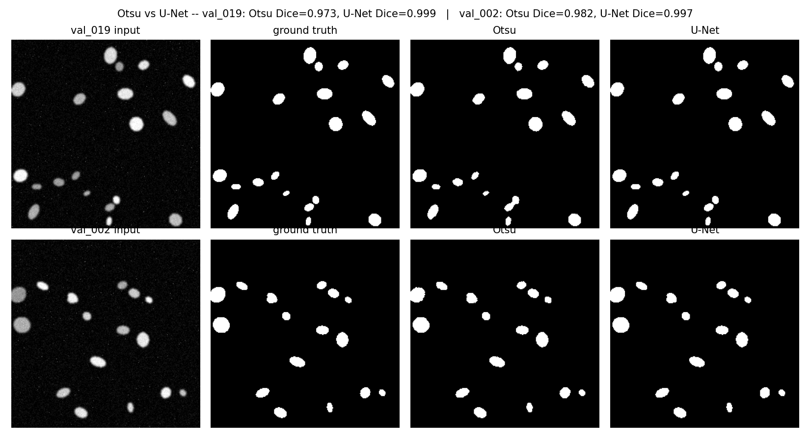
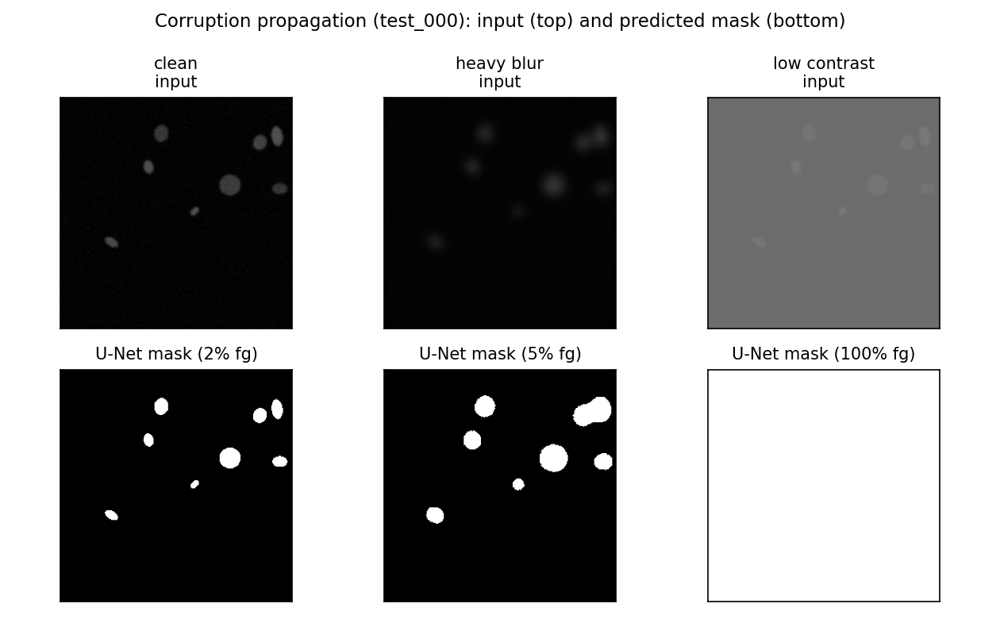

Modality & data. The assigned modality is synthetic fluorescence microscopy (DAPI-like nuclear staining), 112 RGB 256×256 images with paired binary/instance masks, split 80/20/12 (train/val/test), plus 4 corrupted test variants for the robustness extension. All images were converted to 8-bit grayscale (PIL) and confirmed at 256×256 (bilinear resize kept in the code path for portability to other sizes).
Pipeline, as implemented. Task 1 pairs an EDA (sample grid, pooled intensity histogram) with a direct image description from a local vision-language model (llama3.2-vision via Ollama), comparing a naive prompt against a schema-constrained, descriptive-not-diagnostic prompt, repeated 3× to expose run-to-run variability. Task 2 segments the same image classically — Otsu threshold → morphological opening/closing & small-object removal → connected-component labelling → regionprops_table — turns the table into a short deterministic numeric summary, and sends only that text (never the pixels) to a smaller local text LLM (llama3.2) for a paragraph + JSON. Task 3 trains a compact U-Net (4 encoder/decoder stages, base width 16, ≈1.94M parameters, skip connections, combined BCE+Dice loss) for 40 epochs (Adam, lr=1e-3, batch 4, CPU) and evaluates Dice/IoU on the held-out val split. Task 4 chains the trained U-Net → regionprops → code-computed JSON fields → LLM narrative across all 12 unseen test images, aggregated to a CSV. Throughout, numeric JSON fields a user would act on are computed in code, never by LLM arithmetic — the design rationale behind this is discussed under Q4.


Naive prompt (“What is this image showing? ... is there anything wrong with the tissue?”) returned free prose that volunteered an unprompted, confident clinical-sounding judgement: “cells appear to be healthy and normal, with no visible signs of damage or abnormalities.” Nothing in the prompt asked for a health assessment — the model defaulted to one, which is exactly the failure mode Task 1 is designed to catch.
(Full prompt text, incl. exact schema line, in src/vlm_description.py / outputs/json_records/task1_vlm_description.json; shown condensed here for space.)
Run-to-run variability. Three repeats of the identical optimised prompt on the same image gave different answers for tissue_type (“uncertain”, “cell culture”, “uncertain”) and image_quality (“uncertain” twice, but once a full descriptive sentence). Wording of notable_features also changed each time. This is expected LLM sampling variance, not a bug — it is exactly why a single free-text VLM call should never be the sole record of an image (see Q1/Q4).
On train_004, Otsu + morphology detected 37 objects. A sample of the region table:
| label | area | ecc. | solidity | mean int. |
|---|---|---|---|---|
| 1 | 267 | 0.761 | 0.950 | 66.8 |
| 3 | 478 | 0.821 | 0.746 | 64.8 |
| 4 | 2036 | 0.826 | 0.565 | 73.5 |
| 7 | 102 | 0.650 | 0.953 | 52.0 |
Note the disagreement: the code rule (<15 sparse, 15–40 normal, >40 dense) puts 37 objects at normal density; the LLM, given that same count in the prompt text, wrote sparse — a numeric-reasoning slip even in a numbers-only, image-free setting. This is direct evidence that the code-derived JSON, not the LLM's JSON, must be treated as ground truth (Task 4 architecture; Q4).
The U-Net (Section 1 architecture) was trained for 40 epochs on the 80-image train split and evaluated on the 20-image val split; Fig. 3 shows the resulting training and validation curves.

| Split | Method | Mean Dice | Mean IoU |
|---|---|---|---|
| val (n=20) | Otsu (classical) | 0.976 | 0.953 |
| val (n=20) | U-Net (BCE+Dice, 40 ep.) | 0.997 | 0.994 |


The U-Net matched or beat Otsu on every validation image; there was no case where Otsu was actually better, only cases where its disadvantage was small. That the gap is largest on medium-contrast/touching objects and smallest on large, bright, well-isolated ones (Fig. 5) is consistent with Otsu's single global threshold being a good approximation only when foreground/background separation is already easy.
All 12 test images were processed this way (U-Net mask → regionprops → code JSON fields → LLM narrative) and aggregated into outputs/task4_hybrid_records.csv (one row per image; n_objects ranged 8–43, density_class sparse/normal/dense throughout). The narrative prompt keeps Task 2's numbers-only, non-diagnostic framing but asks for prose only (the JSON fields are already fixed by code, so the LLM is not asked to repeat them):

test_000. Blur softens object boundaries but the mask still finds discrete objects. Low contrast is catastrophic: the U-Net mask becomes 100% foreground (the whole frame), silently breaking every downstream stage.Two corrupted variants (heavy Gaussian blur; low-contrast rescale) of 2 test images were traced through all four stages. Blur: pixel std drops ~40–44% (stage 1), mask Dice-vs-GT collapses from ~0.997 to ~0.65 (stage 2, Fig. 6 middle column), object count drops modestly. Low-contrast: pixel mean shifts by hundreds of percent (stage 1), the mask completely fails to 100% foreground (Dice≈0.05–0.36, Fig. 6 right column), and the region table collapses to a single “object” with area=65535 — exactly 256×256. Critically, the LLM narrative for this case still reads fluently (“a single, elongated oval-shaped object…”) with no hint of failure — only the structured field area=65535 exposes it. The earliest stage at which the corruption is detectable at all is stage 1 (raw pixel statistics, before segmentation even runs); the earliest stage at which it becomes unambiguous without instrumenting raw pixels is the stage-3 feature table, not the narrative.
Q1 — VLM vs numbers-first: which is more useful, which is more trustworthy? The direct VLM description (Task 1) is more useful for a fast, human-readable first impression — it reads naturally and needs no downstream code to consume. It is less trustworthy: it is non-deterministic (Section 2), it is not grounded in any measurement that can be independently re-checked, and the naive-prompt run showed it will volunteer confident-sounding judgements it was never asked for. The numbers-first pipeline (Task 2) is more trustworthy because every quantity is reproducible — re-running Otsu+regionprops on the same image always gives the same table — and the LLM's role is reduced to phrasing rather than measuring. It is not perfectly trustworthy either (Section 3 showed a density-class misclassification), which is exactly why the code-derived JSON, not either LLM's JSON, is treated as ground truth throughout.
Q2 — Did the U-Net improve on Otsu? Examples. Yes, on every validation image (mean Dice 0.997 vs 0.976; mean IoU 0.994 vs 0.953). U-Net's advantage is largest on val_019 (Otsu 0.973 vs U-Net 0.999) where nuclei are medium-contrast and partly touching — Otsu's fixed global threshold leaves ragged edges and small spurious fragments (Fig. 5, top row). Otsu is closest to U-Net (though still behind) on val_002 (0.982 vs 0.997), where nuclei are large, bright, and well-isolated against a clean dark background — conditions under which a single threshold is nearly sufficient by construction.
Q3 — Dice/IoU meaning and failure modes. Dice = 2|P∩G| / (|P|+|G|) and IoU = |P∩G| / |P∪G| both measure pixel-set overlap between predicted (P) and ground-truth (G) foreground; IoU penalises boundary/size mismatches more harshly than Dice for the same error. Mean val Dice 0.997 / IoU 0.994 mean predicted masks are almost pixel-identical to ground truth on this dataset. The (narrow, 0.995–0.999) per-image range is lowest on images with more, smaller, or more closely packed nuclei (e.g. val_004, val_005, val_012) — consistent with the qualitative panels, where residual error concentrates at object boundaries and at touching instances. Because the model outputs one binary foreground mask rather than per-instance labels, it structurally cannot separate two touching nuclei into two objects even when the pixel-level Dice looks excellent — a real limitation Dice/IoU do not expose.
Q4 — Where can the LLM hallucinate, and what mitigates it? Three concrete points were observed: (i) Task 1's free-text tissue_type/image_quality fields changing answer across identical re-runs; (ii) Task 2's LLM assigning density_class="sparse" to 37 objects when the code rule (and its own stated count) implies “normal”; (iii) the robustness test's narrative describing a physically broken, whole-frame mask as “a single, elongated oval-shaped object” without flagging anything wrong. Mitigations used in the code: a constrained JSON schema that explicitly permits “uncertain” (removing the pressure to fabricate a confident answer); an explicit “not a diagnostic tool” role instruction; isolating the interpretation LLM from pixels entirely in Tasks 2/4 so it cannot invent visual detail beyond the numbers it is given; a regex-based JSON-extraction-with-retry helper (llm_utils.chat_json) that rejects and retries malformed output; and, most importantly, computing every numeric field a downstream user would act on (n_objects, mean_area, density_class, quality_flag) directly from the regionprops table in code, never from the LLM's own arithmetic. Keeping this code-derived JSON as the source of truth matters because it is deterministic and diffable (identical input → identical output, unlike the LLM text), can be automatically range-checked (e.g. flag area ≥ image area, exactly what would have caught the corrupted-image failure), and lets an auditor trace any number back to the exact pixels and function that produced it — the fluent narrative alone cannot offer any of that.
Q5 — Clinical trust and the highest-impact change. No part of this system should be trusted in a real clinical setting yet. The near-perfect Dice (0.997) reflects a fully synthetic dataset of clean, well-separated, uniformly-stained blobs on a flat dark background — the model has never seen real staining variability, overlapping nuclei at density, or acquisition artefacts, so the number says more about the dataset's ease than about the model's real-world skill. The VLM step is demonstrably non-deterministic and can produce confident-sounding but unverified claims. And evaluation is at the pixel/mask level only — there is no instance-level check, so the pipeline could report a plausible object count for the wrong reason. Considering accuracy, auditability, and dataset limits together, the single highest-impact change would be replacing the synthetic dataset with a real, expert-annotated microscopy/histology set (with a held-out clinical-site split) and wiring the automatic range/plausibility checks the robustness test motivates (e.g. reject or flag any code-derived record whose area is implausible, before any narrative reaches a user) — together these close both the generalisation gap and the “plausible but wrong” narrative failure mode this report demonstrates.
Ronneberger, O., Fischer, P., Brox, T. (2015). U-Net: Convolutional Networks for Biomedical Image Segmentation. MICCAI.
Otsu, N. (1979). A Threshold Selection Method from Gray-Level Histograms. IEEE Trans. Systems, Man, and Cybernetics, 9(1), 62–66.
van der Walt, S. et al. (2014). scikit-image: image processing in Python. PeerJ, 2:e453.
Sørensen, T. (1948). A method of establishing groups of equal amplitude... Biol. Skr., 5, 1–34. (Dice/Sørensen coefficient.)
Meta AI (2024). Llama 3.2 Model Card (incl. vision variants). Served locally via Ollama (ollama.com).
Caicedo, J. C. et al. (2019). Nucleus segmentation across imaging experiments: the 2018 Data Science Bowl. Nature Methods, 16, 1247–1253.